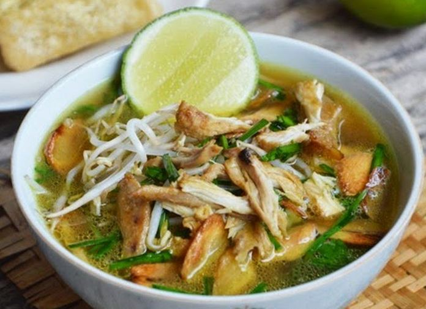

Bahan-bahan
- 1 ekor ayam ukuran sedang
- 2 liter air
- 2 batang serai
- 4 lbr daun Salam
- 8 siung bawang putih
- 1 1/2 sdt garam
- 1 sdt merica butiran
- 2 buah jeruk nipis
- 100 gr soun
- 100 gr toge
- sambal rawit
- kecap manis
- kerupuk
- perkedel unyil
Cara Membuat
- Belah ayam menjadi 4 bagian, sisihkan.
- Haluskan garam, bawang putih dan merica butiran.
- umis bumbu halus dengan serai yg sudah digeprek beserta daun salam hingga harum. Masukan ayam. Tumis sebentar. Lalu tuangkan air, masak hingga mensidih, lalu kecilkan api. Masak hingga ayam matang kurang lebih 30 menit.
- Dalam sebuah mangkok, ambil nasi secukupnya, soun dan toge. Taburi irisan daun bawang, bawang goreng. Lalu siram dengan kuah panas. Peras dengan jeruk nipis, tambahkan kecap manis bila suka, hidangkan dengan
sambal, kerupuk, perkedel kentang, sate telur puyuh, bacem tahu tempe.